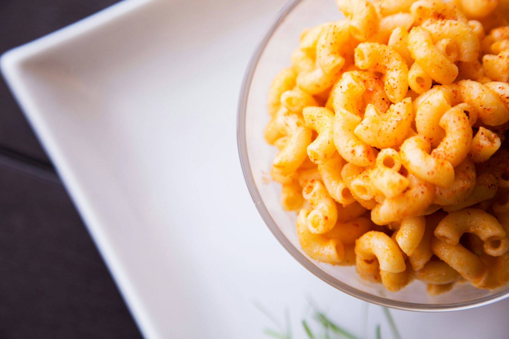

Classic Macaroni and Cheese Recipe

Ingredients:
For the Macaroni:
- 8 oz (225g) elbow macaroni
- Water for boiling
- Salt for boiling water
For the Cheese Sauce:
- 4 tbsp (57g) unsalted butter
- 4 tbsp (32g) all-purpose flour
- 4 cups (946ml) whole milk
- 4 cups (450g) shredded cheddar cheese
- ½ tsp salt
- ¼ tsp black pepper
- ¼ tsp ground nutmeg (optional)
For the Topping (optional):
- 1 cup (115g) breadcrumbs
- 2 tbsp (28g) unsalted butter, melted
Instructions:
- Preheat your oven to 375°F (190°C) if you plan to add a topping.
- Cook the macaroni according to the package instructions in a large pot of salted boiling water until al dente. Drain and set aside.
- In a large saucepan, melt the butter over medium heat.
- Add the flour to the melted butter and whisk to form a roux. Cook for 1-2 minutes, whisking constantly.
- Gradually add the milk to the roux, whisking continuously to prevent lumps from forming.
- Cook the mixture over medium heat until it thickens, about 5-7 minutes.
- Remove the saucepan from the heat and add the shredded cheddar cheese. Stir until the cheese is fully melted and the sauce is smooth.
- Season the cheese sauce with salt, black pepper, and nutmeg (if using).
- Add the cooked macaroni to the cheese sauce and stir until the macaroni is well coated.
- If using a topping, mix the breadcrumbs and melted butter in a small bowl. Sprinkle the mixture evenly over the macaroni and cheese in a baking dish.
- Bake for 20-25 minutes, or until the topping is golden brown and the edges are bubbly.
- Let the macaroni and cheese rest for a few minutes before serving.
Serving Suggestions:
- Serve with a side of steamed vegetables or a simple green salad.
- You can also add cooked bacon, ham, or vegetables to the macaroni and cheese for extra flavor.